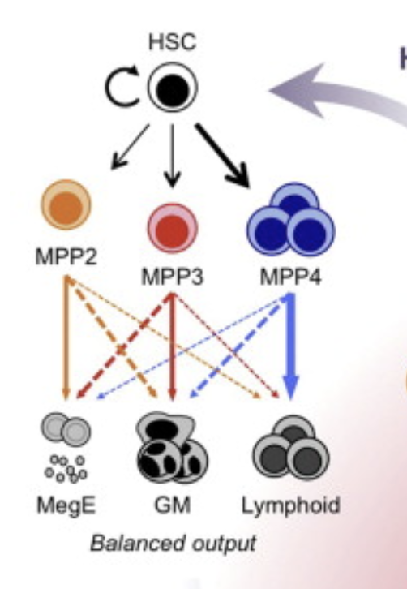

Homework #3
Due 11:59 pm EST, Wednesday March 9th, 2022.
Email your solutions (both .ipnb and .html files) to: compscbio@gmail.com.
Background:
Your recent success in exploring cell cycle during directed differentiation has proven to be both a curse and a blessing. While it has raised your stature in the lab and department, it also means that expectations have also gone up. Accordingly, your PI has now asked you to analyze a data set from the lab of a colleague, who focuses on hematopoiesis.
You are asked to analyze scRNAseq data of hematopoietic stem/progenitor cells isolated from the bone marrow of old and young mice. You have done some background reading Beerman et al 2010 and learned that old mice tend to have fewer erythrocytes than young mice. In this project, you will perform trajectory inference analysis to try to understand why this might be the case.
More background reading Pietras et al Cell Stem Cell 2015 explains the various sub-populations of the sequenced population (Lineage-, Sca-1+, Kit+ or LSK cells):

LSK sub-populations. Figure credit: Pietras et al 2015
This tells you that you should focus on MPP2 and its progeny in your analysis. Fortunately, a well-annotated reference data set has been made available to you (see below), which you think you can use to identify the sub-populations to exclude superfluous cells.
You have also gleaned some gene sets that are preferentially expressed in different lineages as follows:
Hematopoietic stem and progenitors: Procr, Mllt3, Hlf, Fgd5, Hoxa9
Megakaryocyte progenitors: Pf4, Itga2b
Erythroid progenitors: Klf1, Gata1, Epor
The data
Reference scRNAseq in the form of an h5ad file This is the raw counts data. The cell type annotation is in .obs["cell_type"]. This data was derived originally from Tikhonova et al Nature 2019.
scRNAseq of young LSKs Raw counts data from LSK cells of young mice. This data and that from the old animals (below) was derived from Herault et al BMC Bio 2021.
scRNAseq of old LSKs Raw counts data from LSK cells of old mice.
Your mission: Part 1
Use the provided reference data to assign putative identities to your data.
Option 1: Use PySingleCellNet to train a classifier, validate it on held out data, and apply it to your collaborator’s data to infer cell types. Note that you should not clean or normalize the reference data prior to training the classifier.
Option 2: Use the annotated reference data to generate gene sets that mark each LSK sub-population. Then, use these gene sets to score your collaborator’s data to infer cell types.
[2]:
# Part 1 code, figures and explanatory text goes here and in subsequent cells. Show all code.
Your mission: Part 2
Perform trajectory analysis on each data set separately (but not on the reference data). Be careful to exclude superfluous cells prior to analysis. In other words, only use MPP2 and EryPr cells. Use diffmap, and judiciously illustrate the DCs that reflect differentiation.
[ ]:
# Part 2 code, figures and explanatory text goes here and in subsequent cells. Show all code.
Your mission: Part 3
Interpret your results. What do the branches represent? How do the trajectories differ between samples? How might these difference(s) contribute to the lower number of erythroid cells in old mice? You may explore and support your reasoning by further analysis and visualizations, including clustering, PAGA, differential expression, and cell cycle scoring.
[3]:
# Part 3 code, figures and explanatory text goes here and in subsequent cells. Show all code.